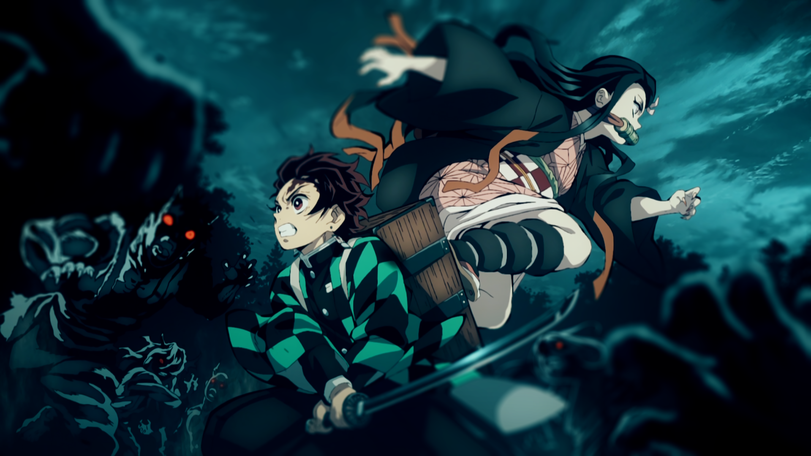
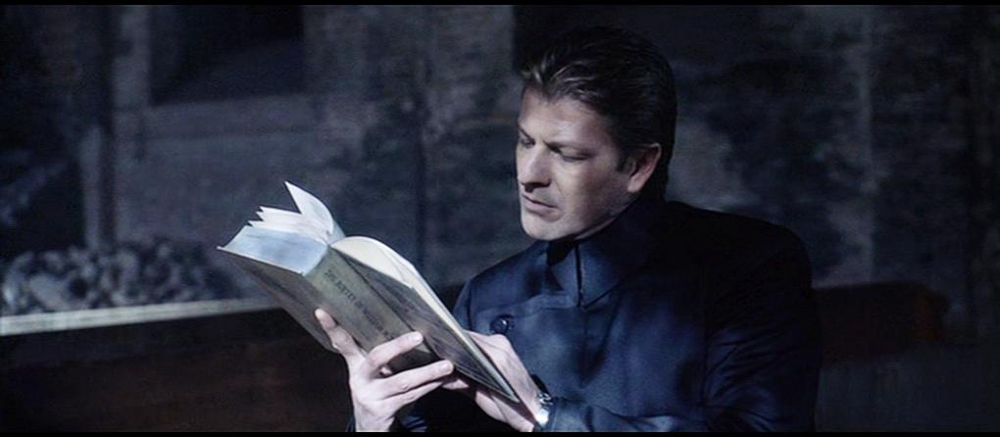

On my down time I like to play video games, watch TV, hangout with my girlfriend, and sleep.
I would like to get back into reading, music, and drawing but have strayed away for those hobbies for a little bit;
Video Games
I like to play different types of video games like first person shooters (FPS), role playing games (RPG), and multiplayer battle arena (MOBA). Some of my favorites include:
I like to watch movies and television shows either by myself, with my girlfriend or with my friends. I like to watch anime, crime shows, comedies and some other genres.


I'm kind of the same way with movies, I like to watch different genres of movies. I do have to say, though I may have had several "favorite movies" through out the years,
the longest lasting one is Equilibrium with Christian Bale and Sean Bean. It’s mainly an action movie on the outside, but it’s deeper meaning is we cannot live without our emotions.
It’s just a wonderful movie about human nature I feel.
Drawing
I haven't worked on any drawings in a while and would like to get back into it some time soon. I like to draw with graphite since I feel that is more forgiving for me. Unfortunately, my drawings are packed away
at this time and I cannot show you my work.
If you would like to see examples of graphite drawings click the image on the right.
Music
I learned to play several instruments over the years. When I was a child, I learned piano; in high school I was in band and played the trombone.
I also learned to play the guitar, that is something I would like to pick up again. I learned to play so many songs over the years that it was hard to keep track of all them.
Here are a couple that I remember off the top of my head:
Seether - Broken ft. Amy Lee
Hinder - Lips Of An Angel
Lifehouse - You and Me
3 doors down - kryptonite
If you would like to hear these songs, use click on portions of the guitar to listen to them.
Books
I am a huge fan of reading and that is another one of my hobbies I would like to get back into. Some of my favorite authors include: